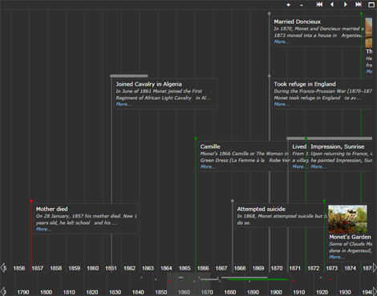

With this Silverlight and WPF control you can create interactive timelines. The control is inspired by Simile Timeline Control (which is implemented with ajax). It is completely based on templates and styles, so it is possible to provide different style for events and timeline itself. Please suggest features and vote for the project if interested. You can use it directly from HTML (for those who is not working with Silverlight) or include it into your Silverlight/WPF projects.

<timeline:TimelineTray
x:Name="timeline"
Height="880"
Grid.Row="0"
CalendarType="gregorian"
HorizontalAlignment="Stretch"
MinDateTime="01/01/1830"
MaxDateTime="01/01/1930"
InitialDateTime="11/01/1855">
<Grid.RowDefinitions>
<RowDefinition
Height="*" />
<RowDefinition
Height="80" />
</Grid.RowDefinitions>
<timeline:TimelineTray.Urls>
<timeline:UriInfo
Url="http://localhost:4444/Monet.xml" />
</timeline:TimelineTray.Urls>
<timeline:TimelineBand
Grid.Row="0"
IsMainBand="True"
ItemSourceType="years"
HorizontalAlignment="Stretch"
TimelineWindowSize="20"
MaxEventHeight="130" />
<timeline:TimelineBand
Grid.Row="1"
Height="80"
HorizontalAlignment="Stretch"
ItemSourceType="decades"
TimelineWindowSize="16"
MaxEventHeight="4" />
</timeline:TimelineTray>
Documentation for users and developers available here: